The goal of nlmixr2 is to support easy and robust nonlinear mixed effects models in R
Installation
For all versions of R, we need to have a compiler setup to run nlmixr2 and rxode2
Windows compilation tools setup
For Windows the compilers come from Rtools. For R version 4.2 and above you need to have Rtools42, for R-4.0.x, and R-4.1.x you need Rtools40. Download and the install from https://cran.r-project.org/bin/windows/Rtools/
Mac compilation tools setup
To setup the mac compilers, simply
Install Xcode from app store
-
Install gfortran:
Download and install from https://mac.r-project.org/tools/
Add gfortran directory to the path with:
export PATH=$PATH:/usr/local/gfortran/bin
R package installation
Installation nlmixr2 itself is easiest in R-4.2.x because no further compilation is required and all supporting packages are available. From R, run:
install.packages("nlmixr2",dependencies = TRUE)For R-4.0.x and R-4.1.x, the crucial package symengine is currently not on CRAN and will have to be installed from MRAN first by running:
install.packages("symengine", repos="https://cran.microsoft.com/snapshot/2022-01-01/")followed by:
install.packages("nlmixr2",dependencies = TRUE)Development version installation
Once the compilers are setup and a compatible version of symengine is installed, you can install the development version of nlmixr2 and its nlmixr2-family dependencies like so:
remotes::install_github("nlmixr2/nlmixr2data")
remotes::install_github("nlmixr2/lotri")
remotes::install_github("nlmixr2/rxode2")
remotes::install_github("nlmixr2/nlmixr2est")
remotes::install_github("nlmixr2/nlmixr2extra")
remotes::install_github("nlmixr2/nlmixr2plot")
remotes::install_github("nlmixr2/nlmixr2")Optional supporting packages can be installed like so:
remotes::install_github("ggPMXdevelopment/ggPMX") # Goodness of fit plots
remotes::install_github("nlmixr2/xpose.nlmixr2") # Additional goodness of fit plots
remotes::install_github("RichardHooijmaijers/shinyMixR") # Shiny run manager (like Piranha)
remotes::install_github("nlmixr2/nlmixr2targets") # Simplify work with the `targets` packageIf you have difficulties due to errors while compiling models, it may be useful to reinstall all of nlmixr2 and its dependencies. For development versions, please use the remotes::install_github() commands above. For the stable version, please use the following command:
install.packages(c("nlmixr2", "nlmixr2est", "rxode2", "nlmixr2plot", "nlmixr2data", "lotri", "nlmixr2extra"))Example
This is a basic example which shows you how to solve a common problem:
library(nlmixr2)
## The basic model consiss of an ini block that has initial estimates
one.compartment <- function() {
ini({
tka <- 0.45 # Log Ka
tcl <- 1 # Log Cl
tv <- 3.45 # Log V
eta.ka ~ 0.6
eta.cl ~ 0.3
eta.v ~ 0.1
add.sd <- 0.7
})
# and a model block with the error sppecification and model specification
model({
ka <- exp(tka + eta.ka)
cl <- exp(tcl + eta.cl)
v <- exp(tv + eta.v)
d/dt(depot) = -ka * depot
d/dt(center) = ka * depot - cl / v * center
cp = center / v
cp ~ add(add.sd)
})
}
## The fit is performed by the function nlmixr/nlmix2 specifying the model, data and estimate
fit <- nlmixr2(one.compartment, theo_sd, est="saem", saemControl(print=0))
#>
#>
#>
#> ℹ parameter labels from comments will be replaced by 'label()'
#>
#> → loading into symengine environment...
#> → pruning branches (`if`/`else`) of saem model...
#> ✔ done
#> → finding duplicate expressions in saem model...
#> → optimizing duplicate expressions in saem model...
#> ✔ done
#> rxode2 2.0.7 model named rx_7bde54c6c90c8ab16296ac0ee0a3a632 model (✔ ready).
#> $state: depot, center
#> $stateExtra: cp
#> $params: tka, tcl, tv
#> $lhs: rx_pred_
#> Calculating covariance matrix
#> rxode2 2.0.7 model named rx_7bde54c6c90c8ab16296ac0ee0a3a632 model (✔ ready).
#> $state: depot, center
#> $stateExtra: cp
#> $params: tka, tcl, tv
#> $lhs: rx_pred_
#> rxode2 2.0.7 model named rx_7bde54c6c90c8ab16296ac0ee0a3a632 model (✔ ready).
#> $state: depot, center
#> $stateExtra: cp
#> $params: tka, tcl, tv
#> $lhs: rx_pred_
#> rxode2 2.0.7 model named rx_7bde54c6c90c8ab16296ac0ee0a3a632 model (✔ ready).
#> $state: depot, center
#> $stateExtra: cp
#> $params: tka, tcl, tv
#> $lhs: rx_pred_
#> rxode2 2.0.7 model named rx_7bde54c6c90c8ab16296ac0ee0a3a632 model (✔ ready).
#> $state: depot, center
#> $stateExtra: cp
#> $params: tka, tcl, tv
#> $lhs: rx_pred_
#> → loading into symengine environment...
#> → pruning branches (`if`/`else`) of saem model...
#> ✔ done
#> → finding duplicate expressions in saem predOnly model 0...
#> → finding duplicate expressions in saem predOnly model 1...
#> → optimizing duplicate expressions in saem predOnly model 1...
#> → finding duplicate expressions in saem predOnly model 2...
#> ✔ done
#>
#> → Calculating residuals/tables
#> ✔ done
#> → compress origData in nlmixr2 object, save 5952
#> → compress phiM in nlmixr2 object, save 62360
#> → compress parHist in nlmixr2 object, save 9560
#> → compress saem0 in nlmixr2 object, save 23224
print(fit)
#> ── nlmixr SAEM OBJF by FOCEi approximation ──
#>
#> Gaussian/Laplacian Likelihoods: AIC() or $objf etc.
#> FOCEi CWRES & Likelihoods: addCwres()
#>
#> ── Time (sec $time): ──
#>
#> setup covariance saem table compress other
#> elapsed 0.001214 0.087003 2.579 0.018 0.024 0.830783
#>
#> ── Population Parameters ($parFixed or $parFixedDf): ──
#>
#> Parameter Est. SE %RSE Back-transformed(95%CI) BSV(CV%) Shrink(SD)%
#> tka Log Ka 0.454 0.196 43.1 1.57 (1.07, 2.31) 71.5 -0.0203%
#> tcl Log Cl 1.02 0.0853 8.4 2.76 (2.34, 3.26) 27.6 3.46%
#> tv Log V 3.45 0.0454 1.32 31.5 (28.8, 34.4) 13.4 9.89%
#> add.sd 0.693 0.693
#>
#> Covariance Type ($covMethod): linFim
#> No correlations in between subject variability (BSV) matrix
#> Full BSV covariance ($omega) or correlation ($omegaR; diagonals=SDs)
#> Distribution stats (mean/skewness/kurtosis/p-value) available in $shrink
#>
#> ── Fit Data (object is a modified tibble): ──
#> # A tibble: 132 × 19
#> ID TIME DV PRED RES IPRED IRES IWRES eta.ka eta.cl eta.v cp
#> <fct> <dbl> <dbl> <dbl> <dbl> <dbl> <dbl> <dbl> <dbl> <dbl> <dbl> <dbl>
#> 1 1 0 0.74 0 0.74 0 0.74 1.07 0.103 -0.491 -0.0820 0
#> 2 1 0.25 2.84 3.27 -0.426 3.87 -1.03 -1.48 0.103 -0.491 -0.0820 3.87
#> 3 1 0.57 6.57 5.85 0.723 6.82 -0.246 -0.356 0.103 -0.491 -0.0820 6.82
#> # … with 129 more rows, and 7 more variables: depot <dbl>, center <dbl>,
#> # ka <dbl>, cl <dbl>, v <dbl>, tad <dbl>, dosenum <dbl>Default plots
plot(fit)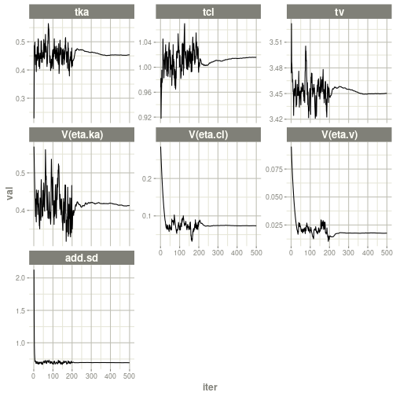
#> Warning: Transformation introduced infinite values in continuous x-axis
#> Warning: Transformation introduced infinite values in continuous y-axis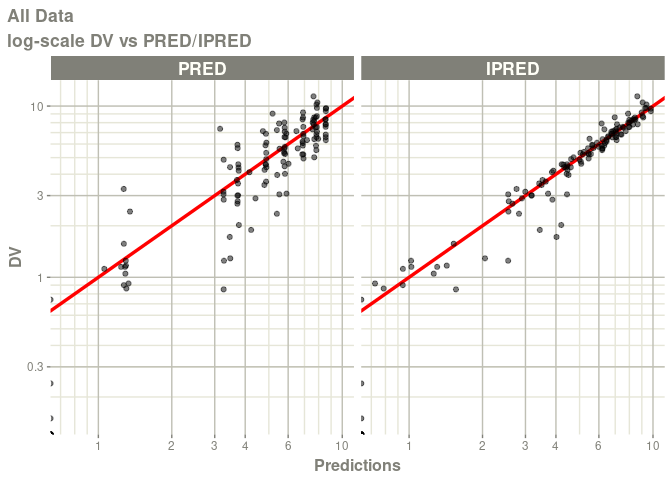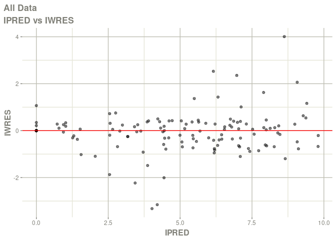
#> Warning: Transformation introduced infinite values in continuous x-axis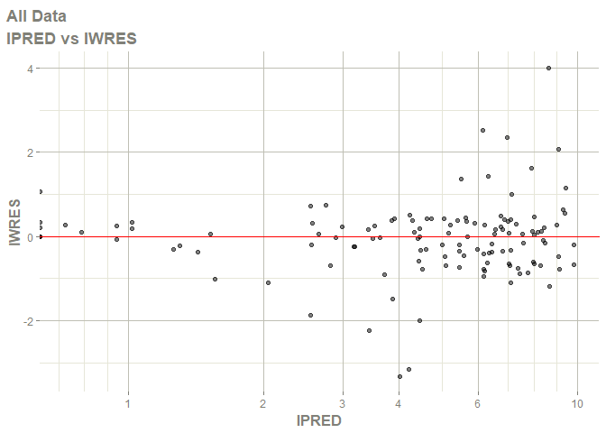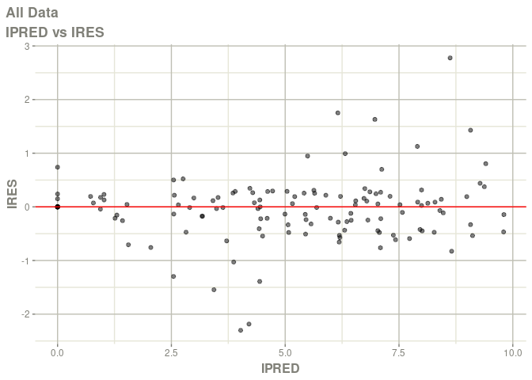
#> Warning: Transformation introduced infinite values in continuous x-axis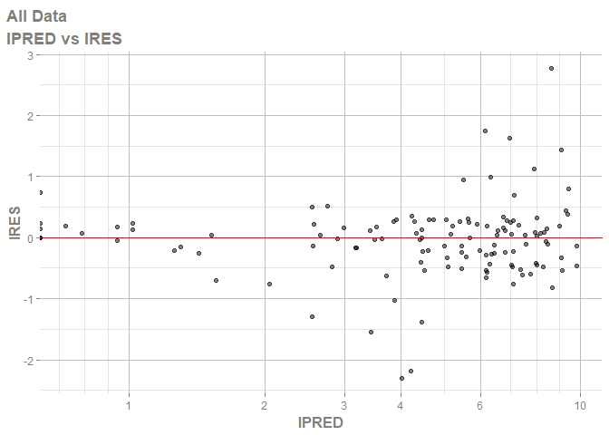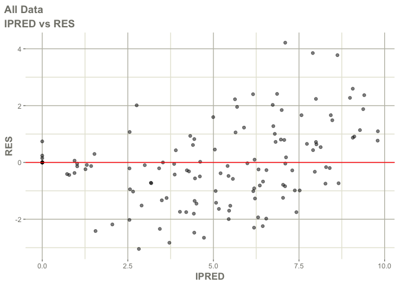
#> Warning: Transformation introduced infinite values in continuous x-axis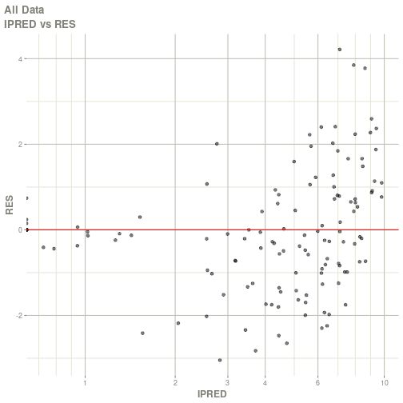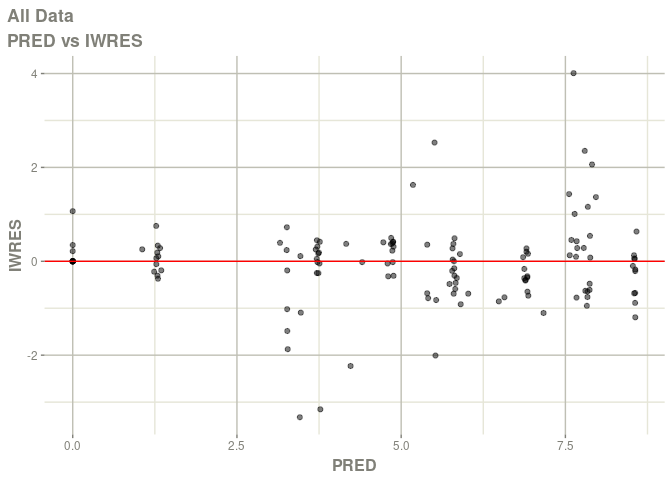
#> Warning: Transformation introduced infinite values in continuous x-axis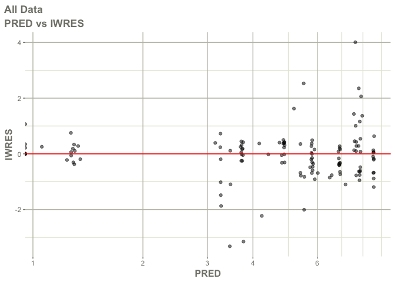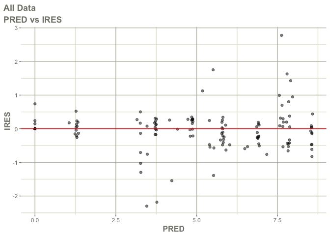
#> Warning: Transformation introduced infinite values in continuous x-axis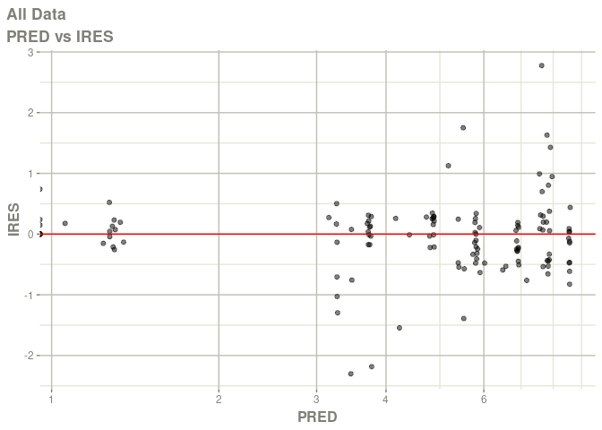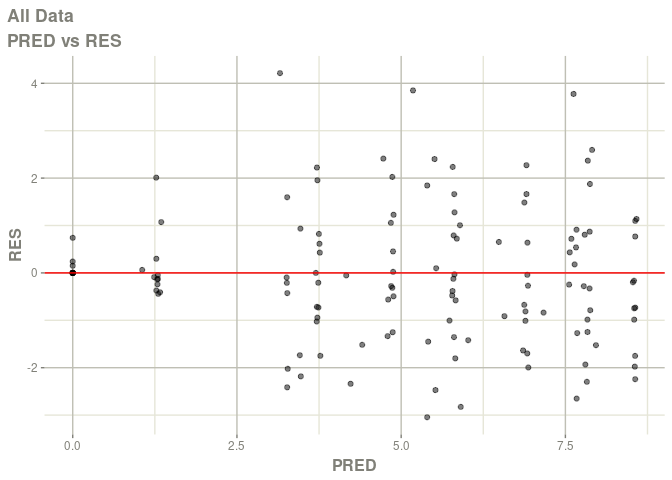
#> Warning: Transformation introduced infinite values in continuous x-axis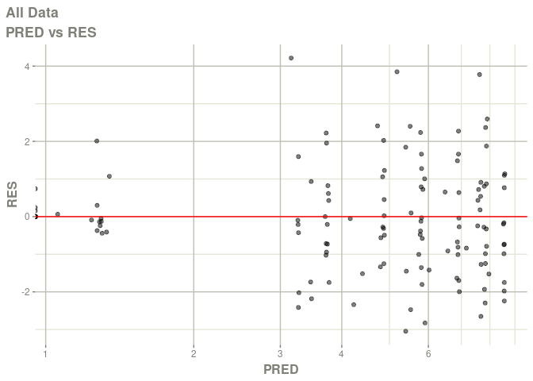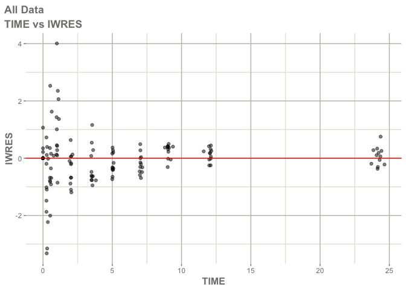
#> Warning: Transformation introduced infinite values in continuous x-axis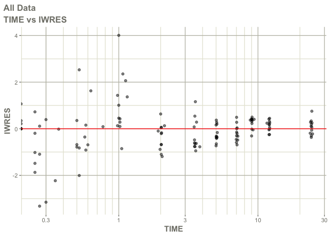
#> Warning: Transformation introduced infinite values in continuous x-axis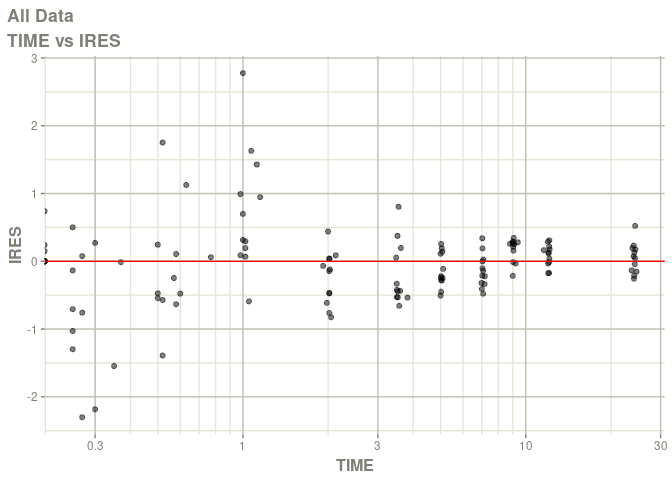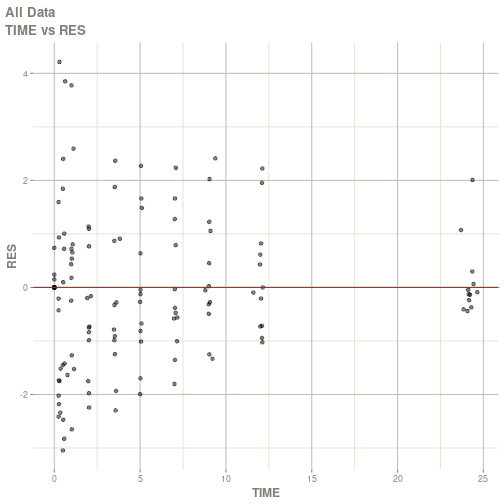
#> Warning: Transformation introduced infinite values in continuous x-axis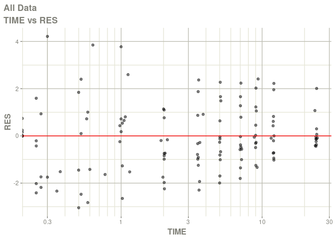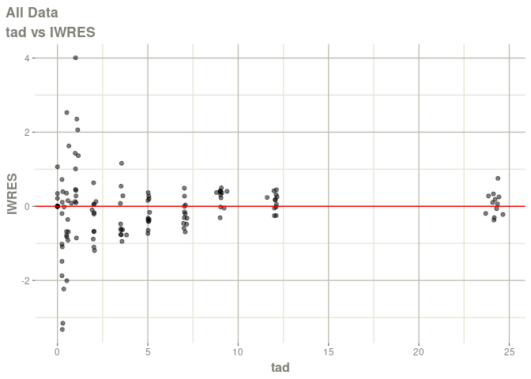
#> Warning: Transformation introduced infinite values in continuous x-axis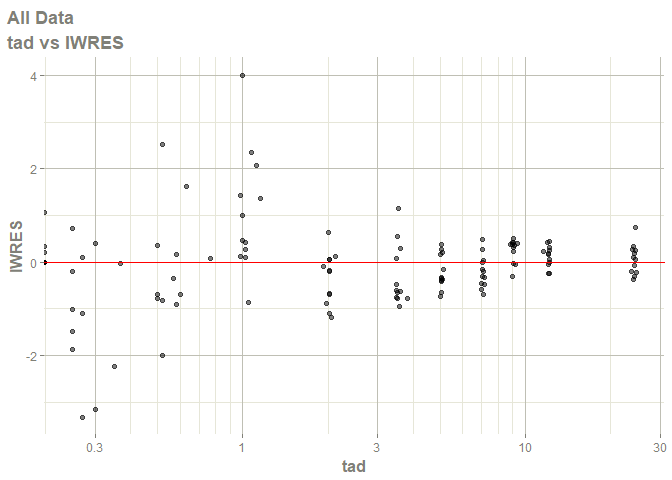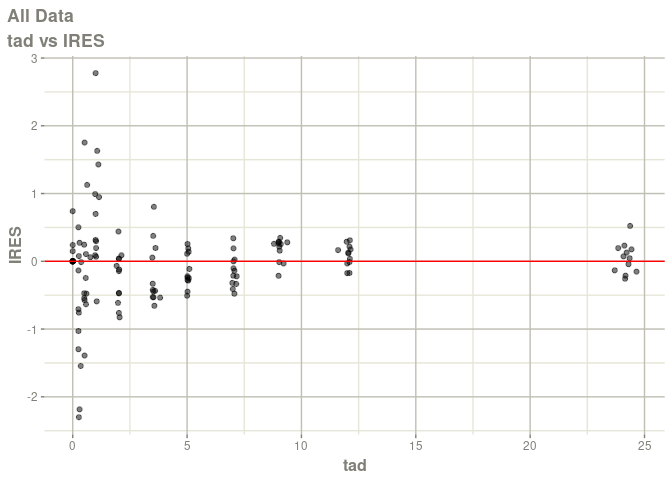
#> Warning: Transformation introduced infinite values in continuous x-axis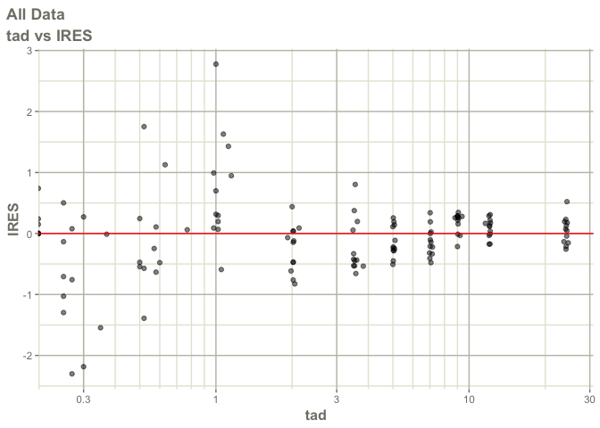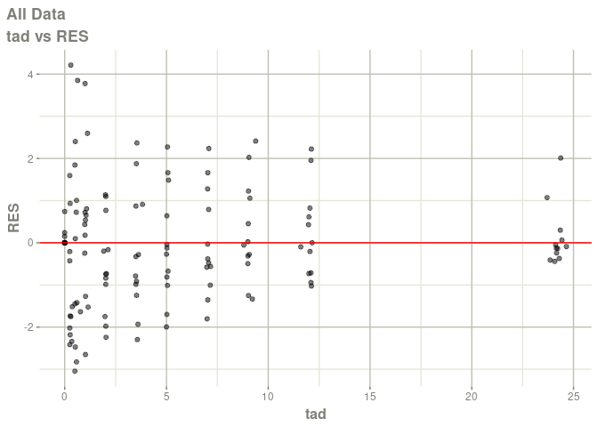
#> Warning: Transformation introduced infinite values in continuous x-axis 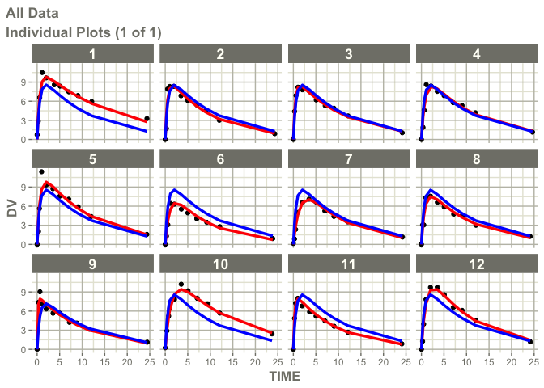
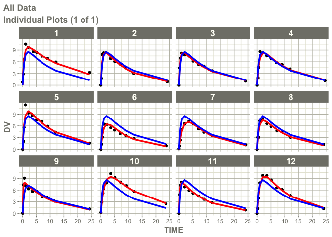